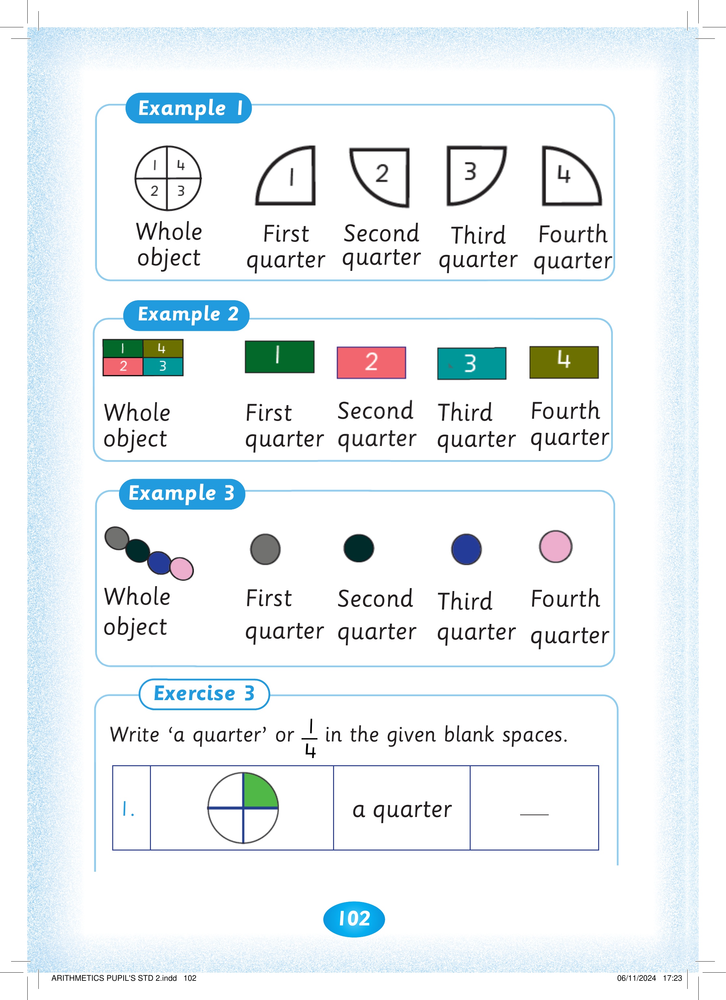
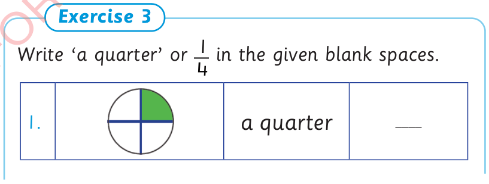
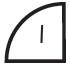
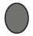
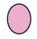
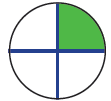

102



Example 1. A circle is divided into four equal quarters, numbered 1, 2, 3 and 4. The separate pieces show the first quarter, second quarter, third quarter and fourth quarter. Example 2. A rectangle is divided into four equal parts, numbered 1, 2, 3 and 4. The separate pieces show the first quarter, second quarter, third quarter and fourth quarter. Example 3. A group of four coloured circles forms the whole object. The grey circle is the first quarter, the dark green circle is the second quarter, the blue circle is the third quarter and the pink circle is the fourth quarter.


Whole object

First quarter
Second quarter
Third quarter
Fourth quarter
Example 2
Whole object
First quarter
Second quarter
Third quarter
Fourth quarter
Example 3
Whole object

First quarter
Second quarter
Third quarter

Fourth quarter
Exercise 3. Write a quarter or 1 over 4 in the given blank spaces. 1. A circle is divided into four equal parts, with the top-right quarter shaded green. The shaded part is a quarter. Write the matching fraction in the blank space.
Write ‘a quarter’ or 4
1 in the given blank spaces.
1.

a quarter
____


ARITHMETICS PUPIL'S STD 2.indd 102
06/11/2024 17:23